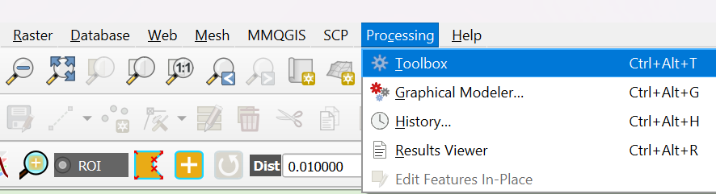

Preparation of Accessibility Map
1. Creating Accessibility Maps Using QNEAT3 Plugin
From the menu bar, go to Processing -> Toolbox
A dialogue box pops up.
Type ‘Iso Areas as Polygons (From Layer)’ and select it.
For Vector layer representing network, select the road layer that is unblocked (before flood) roads_derna_final
For Start points, select evacuation_shelters_before_flood
For Direction field, select oneway
For Value for Forward direction, type in ‘F’
For Value for Backward direction, type in ‘T’
For Value for Both directions, type in ‘B’
Leave the rest of the fields Default.
Click Run.
A new temporary Output polygon layer will be created in the layer panel.
In order to save the new layer, we need to GeoPackage the layer
We can save the features by Export > Save Selected Features As and create a new Geopackage layer. Remember to change the CRS projection to EPSG: 32634. For the file save it as ‘Accessibility_before_flood’.
Now we have to categorise the iso areas by distance.
Right click on the layer and go to Properties.
Select the Symbology Tab. Change to Graduated symbol, and the value to Cost Level. Change the mode to ‘Natural Breaks (Jenks)’, where the class breaks are created in a way that best groups similar values together, therefore maximising the differences between classes for more distinct visualisation. Click on Classify and select OK to close.
- This should be the result.
- Repeat the steps to create a map for Accessibility_of_unblocked_roads. The road layer to be used will now be ‘remaining_acc_roads’ (which are roads that are unblocked post flood) and start points will still remain the same.
- To obtain the layer on unblocked roads post flood, we have to manually remove the blocked roads from what we have researched.
- To do so, click on the roads layer to make it active, and select ‘select features by area’ or single click from the toolbar.
- Manually select the roads to remove.
Save these selected features into Geopackage, name it as ‘impassable_roads’.
To get the remaining roads, we can use the difference function.
From the menu bar, go to Vector -> Geoprocessing tools -> Difference
A dialogue box pops up.
For the input layer, select ‘roads_network’.
For the overlay layer, select ‘impassable_roads’.
Leave the rest of the fields as default.
Click Run.
A temporary difference layer will be created with the remaining roads.
Export and save the layer as geopackage. Rename it as ‘remaining_acc_roads’.
1.1 Creating Buffer Service Area
- From the menu bar, go to Vector -> Geoprocessing tools -> Buffer
A dialogue box pops up.
For the input layer, select ‘evacuation_shelters_before flood’.
Leave the rest of the fields as default.
Click Run.
A new temporary buffer layer will be created.
Save it as a geopackage layer and rename it as ‘buffer_area_evac_centre’
Go to the symbology tab and lower the opacity to 50% so that it will not block the view of the accessibility maps.
1.2 Merging Potential and Existing Sites To Analyse Future Measures
Right click on ‘edu_slope_elevation_model’ and go to the attribute table.
From the menu bar of the attribute table, click on Select Features using an Expression icon.
Inside the expression box, go to ‘Fields and Values’ and double click on ‘Final def’.
Click on ‘=’ sign and select ‘High elevation, Mid slope’ found on the all values dialogue box.
Exclude all values with low slope/low elevation.
Follow the screenshot below on which values to select.
Click on the select features button.
Again, save these selected features into Geopackage, name it as ‘edu_potential_sites’.
Now we will merge it with the existing facilities.
From the menu bar, go to Vector -> Geoprocessing tools -> Union
A dialogue box pops up.
For the input layer, select ‘edu_potential_sites’.
For the overlay layer, select ‘evacuation_shelters_before_flood’.
Leave the rest of the fields as default.
Click Run.
A new temporary union layer will be created.
Save it as a geopackage layer and rename it as ‘edu_healthcare_facilities - union’.
With the new layer, refer to above on how to create an ISO area using QNEAT3 and buffer service area.
Rename the layers as ‘accessbility_unblocked_roads_future’ and ‘buffer_area_w_potential_sites’.
1.3 Measuring The Difference Between Potential and Existing Service Areas
- From the menu bar, go to Vector -> Geoprocessing tools -> Difference
A dialogue box pops up.
For the input layer, select ‘accessbility_unblocked_roads_future’.
For the overlay layer, select ‘accessbility_of_unblocked_roads’.
Leave the rest of the fields as default.
Click Run.
A new temporary difference layer will be created.
Save it as a geopackage layer and rename it as ‘expanded_potential_sites - difference’.